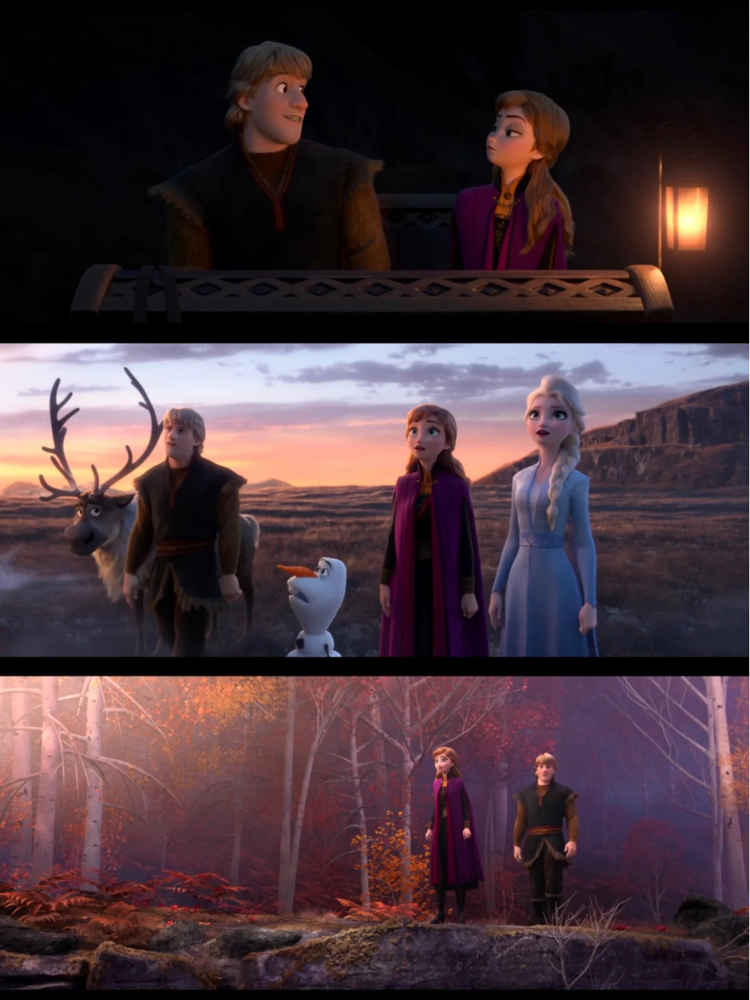
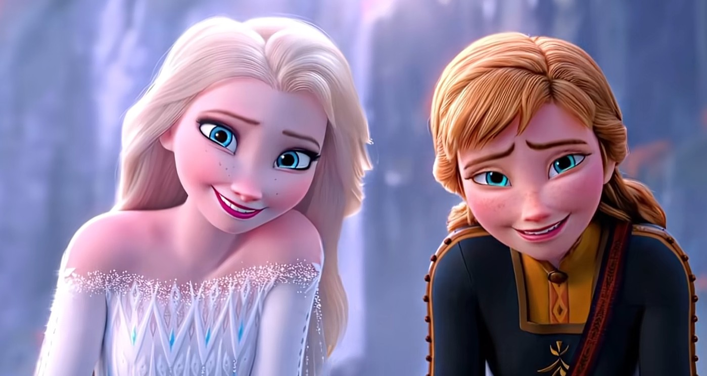

F2：领导者之路


📖 这一页讲什么
《冰雪奇缘2》是安娜的「领导者之路」：从姐姐的追随者到独当一面的女王。这一页按时间线梳理安娜在F2中的完整经历，重点是《The Next Right Thing》与摧毁水坝的决策。
🌲 开篇：平静生活下的暗流
F2开篇，安娜与艾莎、克里斯托夫、雪宝在阿伦黛尔过着平静的生活。《Some Things Never Change》唱出了四人对「不变」的渴望——安娜希望生活永远这样美好。但她也面临「国务 vs 个人生活 vs 与克里斯托夫的感情」的困惑：克里斯托夫计划求婚，却总被冒险打断；安娜作为公主，开始承担更多国务责任。她的服装由象牙色长裙逐步过渡，暗示着她正在从「公主」向「女王」转变。
🌿 魔法森林：与姐姐一同冒险
当艾莎听见来自北方的呼唤、元素之灵开始躁动，安娜选择与姐姐一同前往魔法森林。在森林中，她们遇到了北地人（Northuldra）和被困30多年的阿伦黛尔士兵，发现了祖父鲁内哈德王当年的背叛——他修建水坝并非为了和平，而是为了削弱北地人的力量。安娜在森林中展现了她的「连接者」天赋：她能迅速与北地人建立信任，能说服敌对阵营的士兵合作。她的服装变为紫品红背心配黑裙，更加适合冒险，也暗示着她正在「行动」中成长。
🚶 独自面对：失去一切的低谷
艾莎选择独自渡海前往阿塔霍兰（Ahtohallan）寻找真相，留下安娜守城。不久后，艾莎在冰洞中冰封，雪宝因魔法消失而融化，安娜与克里斯托夫走散。在失落洞窟中，安娜以为自己失去了一切——姐姐、雪宝、方向。这是她人生的最低谷：F1中她至少还有「寻找真爱之吻」的目标，而此刻她什么都没有。但正是在这个低谷中，她唱出了全系列最有力量的歌曲之一——《The Next Right Thing》。
"I'll do the next right thing."
—— 安娜 · 《The Next Right Thing》· 《冰雪奇缘2》
🎵 The Next Right Thing：一步一行的哲学
《The Next Right Thing》是安娜的「觉醒之歌」。在失落洞窟中，她没有沉溺于悲痛，而是对自己说：「I'll do the next right thing」（我会做下一件对的事）。这句歌词揭示了安娜的「行动力哲学」：不是想清楚一切再行动，而是在不确定中迈出下一步。她「一步一行」地划桨、前行、独自承担——从洞窟中爬出来，找到马蒂亚斯将军，说服他与阿伦黛尔士兵一起摧毁祖父的水坝。这首歌不是宏大的宣言，而是「微小的、连续的行动」——正是这些行动，把断裂的关系重新接起，把错误的历史纠正过来。安娜的「做下一件对的事」，后来成为她的执政哲学，也是她成为女王的资格证明。
💥 摧毁水坝：纠正历史的错误
安娜从艾莎传来的冰雕中得知了真相：祖父的水坝是对北地人的背叛，必须摧毁才能解除森林的迷雾。她做出了全片最艰难的决定：摧毁水坝——这意味着阿伦黛尔可能会被洪水淹没，但这是「对的事」。她说服马蒂亚斯将军与阿伦黛尔士兵一起行动，用巨石引爆炸毁水坝。这个决定展现了安娜的「领导者品质」：她不是为了保护自己的王国而隐瞒真相，而是为了「做对的事」愿意承担风险。水坝摧毁后，洪水冲向阿伦黛尔，但艾莎（已解冻并成为第五元素）用冰墙挡住了洪水——姐妹二人，一个「做对的事」，一个「保护王国」，共同完成了历史的纠正。
👑 结局：接任阿伦黛尔女王
F2结局，艾莎选择成为第五元素精灵、留守魔法森林；安娜接任阿伦黛尔女王。她的终幕造型为发髻、黑开衫、碧绿长裙与类艾莎冠饰——融合了个人色与艾莎加冕色调，象征着她「继承姐姐的事业，同时保持自己的风格」。克里斯托夫在城堡向她正式求婚，她接受。安娜的F2弧光，是一个从「姐姐的追随者」到「独当一面的女王」的完整过程：她曾经需要艾莎的保护，最终成为了保护王国的人；她曾经在低谷中迷失，最终用「做下一件对的事」找到了方向。她的女王之路，不是因为她有魔法，而是因为她的性格让她值得被信任、被跟随。
"Arendelle's not safe. The people need their queen."
—— 安娜 · 第二部结尾接任女王 · 《冰雪奇缘2》
